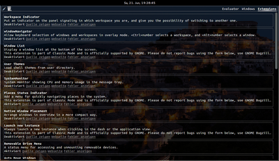

Looking Glass
Dieser Artikel wurde für die folgenden Ubuntu-Versionen getestet:
Ubuntu 14.04 Trusty Tahr
Zum Verständnis dieses Artikels sind folgende Seiten hilfreich:

Looking Glass  ist die in die GNOME Shell integrierte JavaScript-Konsole und Inspektionswerkzeug. Versehen mit einem Debugger, eignet sich dieses Werkzeug zum Auffinden von Fehlern bei installierten GNOME-Shell-Extensions.
ist die in die GNOME Shell integrierte JavaScript-Konsole und Inspektionswerkzeug. Versehen mit einem Debugger, eignet sich dieses Werkzeug zum Auffinden von Fehlern bei installierten GNOME-Shell-Extensions.
Bedienung¶
Um die JavaScript-Konsole zu öffnen, öffnet man den Ausführen-Dialog[1] (
Alt +
F2 ) und gibt den Befehl lg ein. Zum Verlassen der JavaScript-Konsole drückt man
Esc .
Die Konsole beinhaltet drei Unterkategorien:
JavaScript-Evaluator
Fenster (Windows)
Erweiterungen (Extensions)
Außerdem wird in der linken oberen Ecke ein Symbol dargestellt, welches einen Auswahlmöglichkeit (engl. Picker) für einzelne Elemente des Fenstermanagers zur Verfügung stellt.
JavaScript-Evaluator¶
Der Evaluator stellt einen JavaScript-Prompt zur Verfügung. Eine besondere Funktion der Befehlsaufforderung ist die Chronik von lg, welche alle errechneten Werte speichert. Diese befindet sich im Dconf-Schlüssel /apps/gnome-shell/looking-glass-history und wird außerdem bei jedem Start der GNOME Shell geladen.
Looking Glass stellt dem Entwickler eine besondere Funktion zum Verlangsamen von Animationen zur Verfügung; diese ist sinnvoll, wenn man ein neues Animationsverhalten implementieren möchte.
Fenster¶
 Hier werden alle geöffneten Fenster angezeigt, darunter auch folgende Informationen:
Fenstertitel
Klassenname im Fenstermanager
Startdatei (.desktop)
Erweiterungen¶
Unter diesem Punkt werden Informationen zu den installierten Erweiterungen angezeigt:
Status (de-/ aktiviert)
Entwicklerwebseite
Speicherort der Quelldateien
Übersicht über alle Fehler, die diese Erweiterung erzeugt hat.
 - Übersichtsseite
- Übersichtsseite- Erstellt mit Inyoka
-
 2004 – 2017 ubuntuusers.de • Einige Rechte vorbehalten
2004 – 2017 ubuntuusers.de • Einige Rechte vorbehalten
Lizenz • Kontakt • Datenschutz • Impressum • Serverstatus -
Serverhousing gespendet von